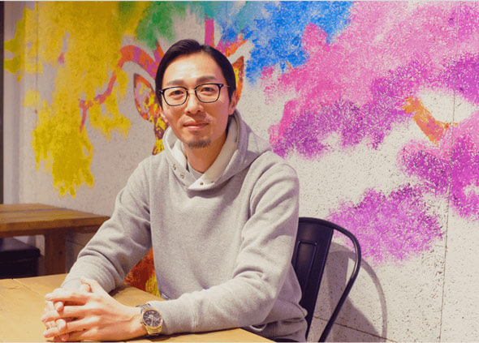
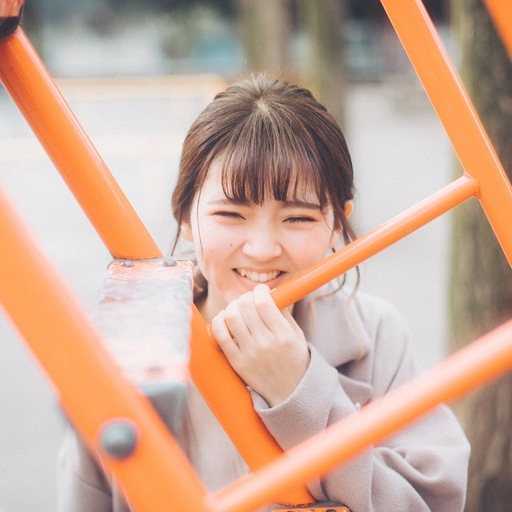
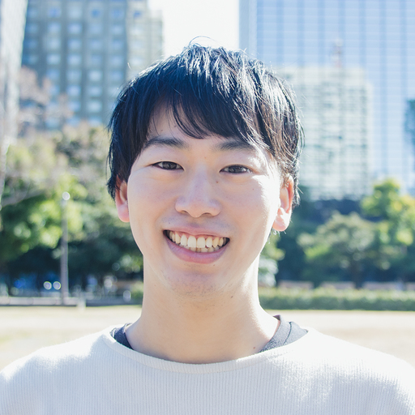
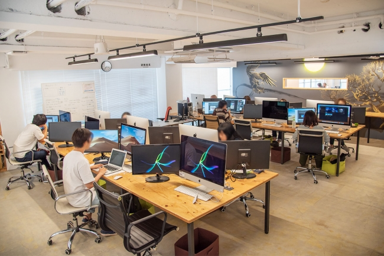
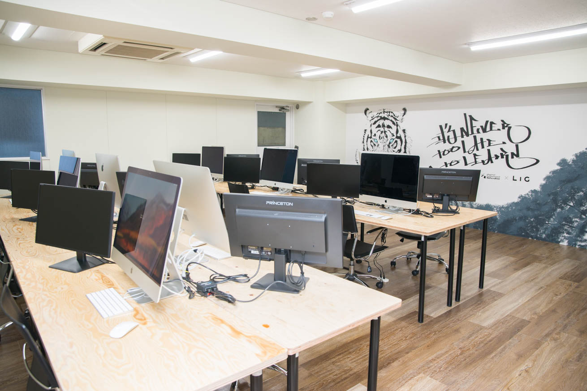
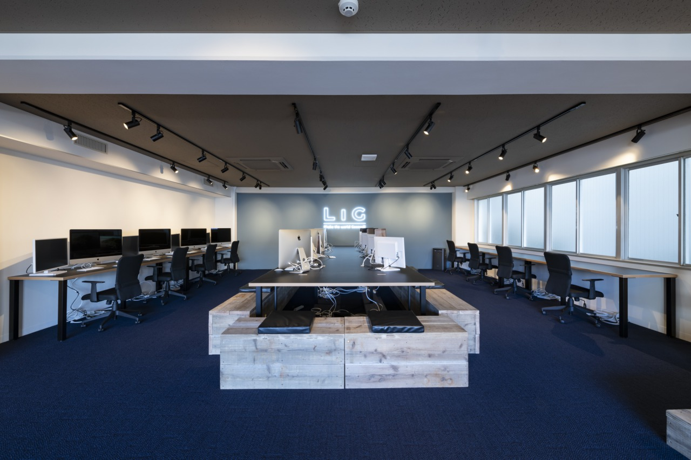

いつだって先の見えない世の中だけど
自分らしく、自由に、前向きに、
生きる道はきっとある。
It’s never too late to learn.
好きなことを学び始めるのに
遅すぎることなんてない。
Webデザインを学んで、
世界に恋しよう。
ワクワクする明日へ、
ドキドキする未来へ、
いま、一歩踏み出そう。
180日であなたも
未経験から
Webデザイナーになれる！
Webデザイナースクール・デジタルハリウッドSTUDIO by LIG（デジLIG）は
5年間で３校開校し、1,000人以上の卒業生を輩出しています。
たくさんの卒業生がプロのWebデザイナーとして自分らしく活躍しています。

Web制作のプロ集団・LIGが
あなたの夢を叶えます。
数多くのデザインアワードを受賞してきたWeb制作会社LIGが運営するデジLIG。
Web制作の最前線で働く彼らがあなたの学びを加速させます。
運営会社の制作会社LIGとは
最先端でイケてるWebサイトやシステム制作を中心に、教育事業、シェアオフィスやゲストハウスの運営、マーケティング、記事・動画コンテンツ作成など幅広く展開している上野の会社。
「LIFE IS GOOD」つまり「自分のLifeがGoodで、仕事を通じてあなたのLifeをGoodにすること」を目指しています。
デジLIG3つのいいところ
01
プロの講師に直接教えてもらえる
デジLIGでは、現役のWebデザイナー、エンジニアとして活動されている方がトレーナーとして在籍しております。基本的な技術の指導だけではなく、講師陣のWeb業界での働き方や実践的な視点を吸収することで、卒業後のキャリアに役立てていくことができます。
- 
中里 寛 トレーナー
フリーのWebディレクター・デザイナー・プログラマーとしてクライアントの分野や大小を問わず、ニーズにマッチした制作を行う。複数の企業にて研修講師やWeb制作における顧問としても活動中。
- 
國岡 詩織 トレーナー
フリーのWebディレクター・デザイナー・プログラマーとしてクライアントの分野や大小を問わず、ニーズにマッチした制作を行う。複数の企業にて研修講師やWeb制作における顧問としても活動中。
-
相原 典佳 トレーナー
フリーのWebディレクター・デザイナー・プログラマーとしてクライアントの分野や大小を問わず、ニーズにマッチした制作を行う。複数の企業にて研修講師やWeb制作における顧問としても活動中。
- 
成田 大河 トレーナー
フリーのWebディレクター・デザイナー・プログラマーとしてクライアントの分野や大小を問わず、ニーズにマッチした制作を行う。複数の企業にて研修講師やWeb制作における顧問としても活動中。
-
加藤 シンヤ トレーナー
フリーのWebディレクター・デザイナー・プログラマーとしてクライアントの分野や大小を問わず、ニーズにマッチした制作を行う。複数の企業にて研修講師やWeb制作における顧問としても活動中。
02
現場の声が聞ける豊富なLIVE授業！
Web業界はもちろん、Webデザイナーとして働いていく上で必要なスキルが身につくオリジナル授業を開催！フリーランスとして活躍されているトレーナーや、LIGメンバーが講師として登壇し実践的な講義を行います。レイアウトやフォント、配色の基礎講座はもちろんのこと、転職を見据えたポートフォリオの作成講座やこれからのWebデザイナーに求められる「マーケティング」や「ディレクション」「UX」の講座等、幅広く充実した授業をだれでも受講可能です。
-
超効率的なWebデザイン勉強法！講座
講師
LIGデザイナー
えびちゃん勉強を進めるにあたって、効率よく進める方法や悩んだポイント、転職活動についてお伝えいたします！LIGで唯一デジLIG卒業生ですので、不安に思っていることなど、なんでも聞いていただければ！
-
Webデザイナーを目指すために必要なこととは？
講師
LIGデザイナー
ななみんWebデザイナーを目指すにあたって、どんなWebデザイナーになりたいのか、そのためにどんなポートフォリオを作るべきなのかを自分の経験を踏まえてお伝えします！なんでも相談乗りますよ！
-
Web制作に関わるマーケティング講座
講師
LIGマーケター
まこりーぬマーケティングはこわくない！マーケティングという職能を身につけバリューアップしよう！Webデザイナーが最低限知っておくべきマーケティング知識をシンプルにお話しします！
03
充実の転職サポート！
マンツーマンサポート体制で不安を解消する！
Webクリエイターになるためには、ツールの習得だけでは足りません。自分の進みたい方向にいくためにはどのような準備が必要か、制作会社だからこそわかる現場の採用基準をもとに、履歴書・経歴書の添削はもちろん、Webクリエイターになるために必要なポートフォリオを重点的に添削し、マンツーマンで転職を支援します。
LIGならではの転職セミナーで進みたい道を見つける！
未経験からWebデザイナーへ転職をするためには、効率的な学習が必要です。転職方法や、最新の転職市場の情報、さらにはLIG社内の人事やデザイナー責任者などの選考基準などを細かくお伝えします。早い段階で転職で求められているポイントを把握することで、自分の目標に向けて最適な学習期間を過ごすことができます。
集中講座でポートフォリオの質を高める！
より良い転職先への内定を目指している方には、「デザイン集中講座」の受講がおすすめです。LIGで新人デザイナーを育成する際に用いる実践的な講義で、更にデザイナーとしてお仕事ができるレベルまでのデザイン力を身に付けられます。ここで制作したアウトプットが評価されて、実際に希望の会社への転職に成功した方も。
まずは無料の説明会に
ご参加ください
「本当に転職できるの？」
「働きながら続けられるのか不安」
「デジLIGが自分に合ってるのか分からない」
そんな方のためにデジLIG担当者が何でも相談できる無料の個別説明会を実施します。
ぜひお気軽にご相談ください。
無料説明会はこちら
料金プラン
-
Webデザイナー専攻
6ヶ月 450,000円（税別）
-
グラフィックデザイン経験者プラン
6ヶ月 370,000円（税別）
-
Web担当者プラン
6ヶ月 370,000円（税別）
-
フリーランススタートアップパック
6ヶ月 480,000円（税別）
もっと学びたい人は
-
LIGデザイナー直伝！デザイン集中講座
（※隔月開催）2ヶ月 128,000円（税別）
-
PHP講座
2ヶ月 128,000円（税別）
-
WordPress講座
2ヶ月 128,000円（税別）
校舎情報
どのSTUDIOでも、自宅でも、どこでも、
オンラインでの受講が可能！
-

上野STUDIO
Google Map〒111-0056
東京都台東区小島2-20-11 LIGビルJR御徒町駅から徒歩10分
銀座線 稲荷町駅から徒歩7分
大江戸線/つくばエクスプレス線 新御徒町駅A3から徒歩1分 -

-

よくある質問
-
未経験でついていけるか不安です
未経験の方を前提としたカリキュラムをご用意していますので、心配ございません。
初心者の方でも基礎から学べるカリキュラムですのでご安心ください。トレーナーがマンツーマンで教えてくれるため、進捗にあわせた対応が可能です。 -
働きながらでも通えますか？
いつでもどこでも場所や時間を選ばず学べる映像教材や、好きな時間にSTUDIOの予約ができるので、社会人から学生まで、それぞれのライフスタイルに合わせて通学が可能です。個別でスケジュール設定が可能なので、両立して通うことができます。STUDIOは平日22時、土日20時まで開校しています。トレーナーへの質問もオンラインで行える体制が整っているため、通学しないときでも気軽に学習の相談をしていただけます。
-
料金の分割払いは可能ですか？
コース問わず可能です。詳細については、個別説明会もしくは電話問い合わせにてご質問ください。
-
パソコンやソフトの準備がなくても大丈夫でしょうか？
受講期間中はSTUDIOのパソコン（iMac）およびソフト（Adobe CC）を自由にご利用いただけるため、パソコンやソフトのご準備がなくても受講可能です。完全オンラインでの学習をご検討している場合は、学習環境を整えていただく必要がございます。
まずは無料の説明会に
ご参加ください
「本当に転職できるの？」
「働きながら続けられるのか不安」
「デジLIGが自分に合ってるのか分からない」
そんな方のためにデジLIG担当者が何でも相談できる無料の個別説明会を実施します。
ぜひお気軽にご相談ください。
無料説明会はこちら
#仲間がいるからがんばれる
なんかえもい文章なんかえもい文章なんかえもい文章なんかえもい文章なんかえもい文章なんかえもい文章なんかえもい文章なんかえもい文章なんかえもい文章なんかえもい文章なんかえもい文章なんかえもい文章なんかえもい文章なんかえもい文章なんかえもい文章なんかえもい文章なんかえもい文章なんかえもい文章なんかえもい文章
#デジLIG で検索検索！